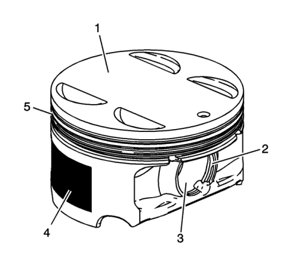
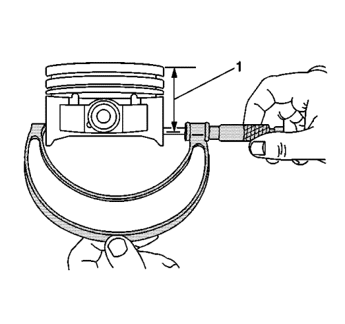
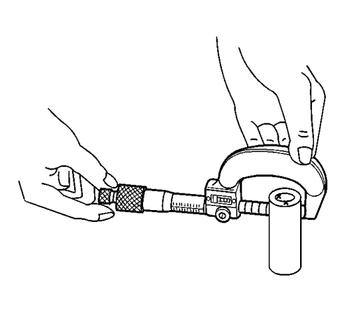
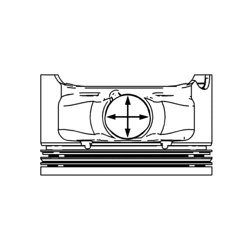
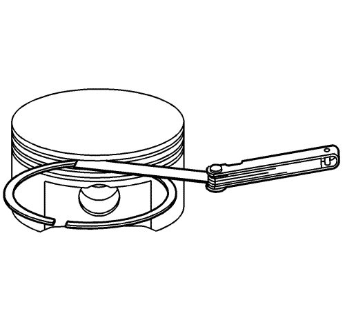
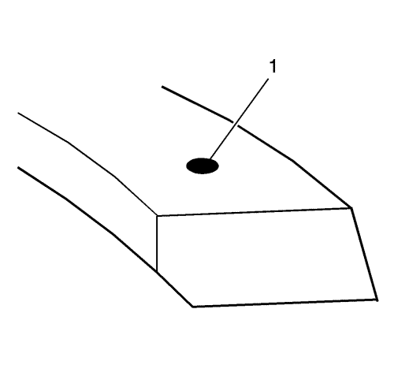
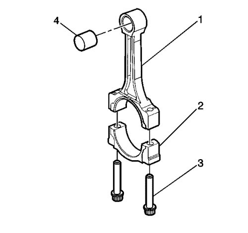
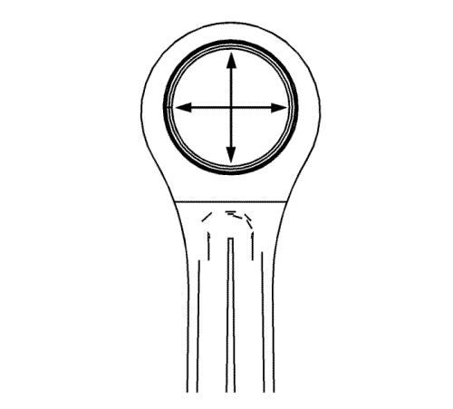
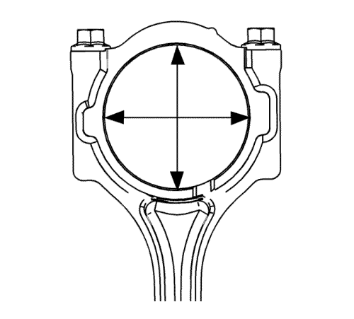

Limpieza e inspección de pistones, bielas y cojinetes
Procedimiento de limpieza
Nota: NO utilizar un cepillo metálico para limpiar ninguna de las partes del pistón.
- Limpiar las faldas de los pistones y los bulones con disolvente.
- Limpiar las ranuras de los segmentos del pistón con un limpiador especial para ranuras. Asegurarse de que los orificios y las ranuras de los segmentos de engrase estén limpios.
Advertencia: Consulte Advertencia, protección ocular en la sección Prólogo
- Seque el pistón con aire comprimido.
Procedimiento de comprobación del pistón

- Examinar los pistones por si se observan las siguientes condiciones:
| • | Roturas en las pistas de los segmentos, grietas en las faldas o alojamientos de los bulones. |
| • | Dentelladas o rebabas en las ranuras de los segmentos que pudieran producir agarrotamiento (5) |
| • | Pistas de segmentos desgastadas o deformadas (5) |
| • | Rebabas en las ranuras de retención del bulón del pistón (2) |
| • | Zonas erosionadas en la cabeza del pistón (1) |
| • | Arañazos o daños en el revestimiento de las faldas de los pistones (4) |
| • | Desgaste de orificios de bulones o de los bulones de pistón (3) |
- Sustituir aquellos pistones donde se observen indicios de desgaste excesivo o de daños.
Procedimiento de medición de pistones

- Medir la anchura del pistón utilizando unos siguientes procedimientos:
| 1.1. | Utilice un micrómetro de exteriores para medir la anchura del pistón a 30 mm (1,181 pulg.) debajo de la corona, en la parte superior (1), en las superficies de empuje del pistón, perpendicularmente a la línea central del bulón del pistón. |
| 1.2. | Comparar el valor medido del pistón al del diámetro de su cilindro restando el valor de la anchura del pistón al del diámetro del cilindro. |
| 1.3. | Compruebe sus mediciones con el Especificaciones mecánicas del motor : LF1 . |
| 1.4. | Si el valor obtenido tras la medición es superior al especificado y los valores de los cilindros están dentro de las tolerancias especificadas, sustituir el pistón. |

- Medir la holgura entre el alojamiento del bulón en el pistón y el bulón utilizando el procedimiento siguiente:
| 2.1. | Tanto los bulones como sus alojamientos deberán estar libres de marcas de fricción. |
| 2.2. | Utilizando un micrómetro de exteriores, medir el bulón del pistón en sus áreas de contacto. |

- Utilizando un micrómetro de interiores, medir el diámetro interior del alojamiento del bulón. Compare el resultado del diámetro del bulón y la holgura entre bulón y su orificio incluida en Especificaciones mecánicas del motor : LF1 .
- Si la holgura es excesiva, determine qué pieza no cumple las especificaciones y haga las sustituciones necesarias.
- Debe sustituir el pistón si cualquiera de sus dimensiones está fuera de la especificación.
- Si el nuevo pistón no cumple las especificaciones de holgura, es posible que haya que aumentar la sobremedida del bloque motor en 0,25 mm (0,010 pulg.). Sólo hay un tamaño de pistones sobredimensionados y de anillos disponibles para el servicio.
Procedimiento de medición de segmentos de pistón

- Medir la separación entre las puntas de los segmentos del pistón utilizando el procedimiento siguiente:
| 1.1. | Colocar el segmentos del pistón en el cilindro a una profundidad de aproximadamente 25 mm (1 pulg.) por debajo del plano superior del motor. Asegurarse de que el segmento está perpendicular con respecto al cilindro, empujándolo en posición sirviéndose de la cabeza del pistón. |
| 1.2. | Medir la separación entre las puntas del segmento utilizando unas galgas adecuadas . Consultar Especificaciones mecánicas del motor : LF1 . |
| 1.3. | Si las separaciones exceden los valores especificados, deberán sustituirse los segmentos. |
| 1.4. | Repetir el procedimiento en todos los segmentos del pistón. |

- Medir la holgura lateral de los segmentos del pistón utilizando el procedimiento siguiente:
| 2.1. | Girar el segmento en toda la circunferencia de su ranura en el pistón. Si la ranura del segmento causa cualquier agarrotamiento, desbarbe la ranura con una lima fina. Si se observa agarrotamiento debido a que el segmento está deformado, sustituir el segmento. |
| 2.2. | Con el anillo de pistón sobre el pistón, utilice galgas de espesores para comprobar la holgura en distintos puntos. |
| 2.3. | Compare las mediciones con la holgura lateral de los segmentos de pistón incluida en Especificaciones mecánicas del motor : LF1 . |
| 2.4. | Si la holgura es superior a los valores especificados, sustituir los segmentos. |

- Cerca de su extremo, a efectos identificación, los segmentos de pistón llevan una muesca de localización (1). Instalar los segmentos de compresión con la marca de identificación orientada hacia arriba.
- Si el nuevo segmento no reduce la holgura según la especificación pertinente, monte un pistón nuevo.
- Si el nuevo pistón no cumple las especificaciones de holgura, es posible que haya que aumentar la sobremedida del bloque motor en 0,25 mm (0,010 pulg.). Sólo hay un tamaño de pistones sobredimensionados y de anillos disponibles para el servicio.
Procedimiento de limpieza de las bielas
- Limpie las bielas en disolvente.
Advertencia: Consulte Advertencia, protección ocular en la sección Prólogo
- Seque la biela usando aire comprimido.
- Desmonte la tapa de biela y limpie las roscas.
- Desmonte y elimine el cojinete de biela. Nunca reutilice un cojinete de biela usado en un motor que funcione.
Procedimiento de comprobación visual de las bielas

- Revise si el casquillo (4) del bulón de pistón está arañado o dañado.
- Compruebe si el cuerpo (1) de la biela está retorcido o curvado.
- Revise si la tapa de biela (2) presenta muescas o daños provocados por posibles interferencias.
- Examinar la posible existencia de arañazos o abrasión en la superficie del asiento del cojinete de biela
Nota: NO utilizar un rascador en los muñones o tapas de biela.
- Si se observan pequeños arañazos en los orificios de los muñones de las bielas, limpiar los orificios utilizando papel de lija y siguiendo un movimiento circular.
Procedimiento de medición de las bielas
Extremo de bulón del pistón
Nota: Todas las mediciones de los componentes deberán efectuarse a una temperatura ambiente moderada.
- Utilizando un micrómetro de exteriores, medir el bulón del pistón en 2 puntos en la zona donde hace contacto con la superficie del muñón de la biela.

- Utilizar un micrómetro de interiores y medir el alojamiento del bulón del pistón en la biela.
- Restar el valor del diámetro del bulón al del alojamiento en la biela.
- Compare las medidas de holgura con Especificaciones mecánicas del motor : LF1 .
- Si la holgura es excesiva, sustituya el bulón del pistón. Si el nuevo bulón no resuelve el problema de holgura, sustituya la biela.
Varilla de unión, extremo del cojinete del cigüeñal

Nota: Todas las mediciones de los componentes deberán efectuarse a una temperatura ambiente moderada.
- Utilizar un micrómetro de interiores y medir el diámetro del alojamiento del cojinete del cigüeñal en la biela.
- Compare las medidas del orificio con Especificaciones mecánicas del motor : LF1 .
- Sustituya la biela si el orificio incumple las especificaciones. NO rectifique la biela.
| © Copyright Chevrolet Europe. All rights reserved |